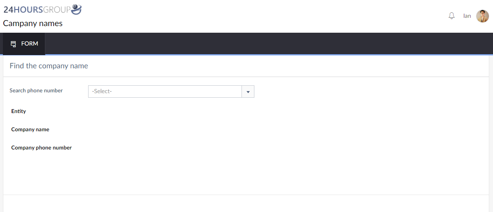

Partner company lookup
A focused phone-number search form for partner identity and contact information.
- Organization
- RG26 Technologies
- Focus
- Internal application
- Shown here
- Company lookup form
The problem
Staff need a convenient place to identify a partner company and locate its contact details.
The approach
A single lookup form places a phone-number selector above the company identity and phone fields.
Workflow details
- Select a phone number.
- Review the Entity, Company name, and Company phone number fields.
Intended value
The interface is intended to provide a consistent reference point for routine partner enquiries.
Lookup interface
Select a screenshot to enlarge it.
{kind=link}

Enlarge screenshotProject scope & source
Interface evidence. The supplied form has no populated result, so matching rules, successful retrieval, data coverage, permissions, and deployment are not demonstrated.
Source: RG and BritePH Project Case Studies Revised. Project-specific delivery dates and individual responsibilities are not specified in the source.
Planning a similar project?
Discuss a project